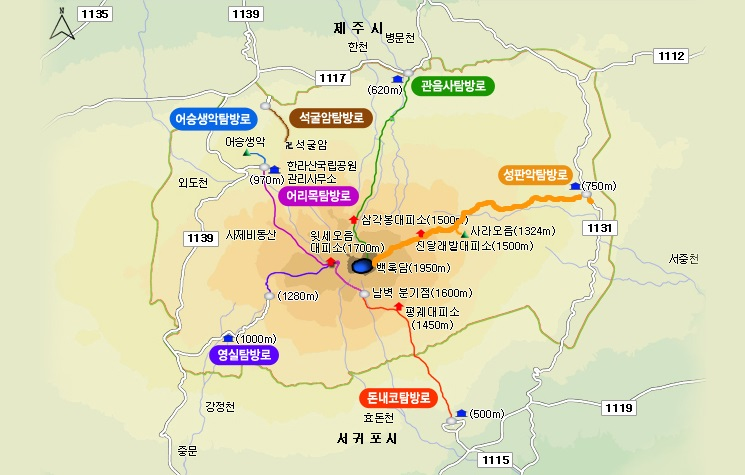
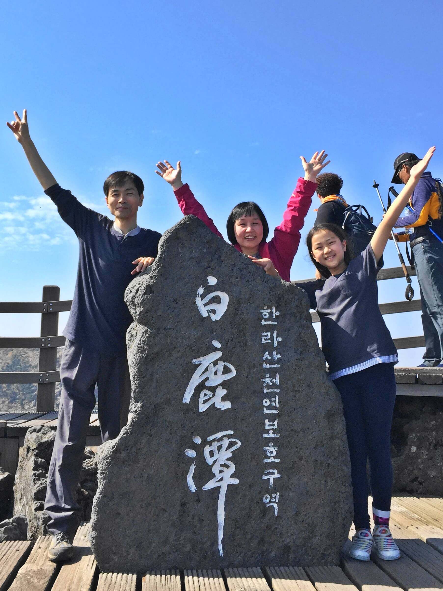

| 2018년 10월 08일 |
브릭 캠퍼스, 아침미소목장 |
| 10월 09일 |
다가미김밥, 성판악, 속밭대피소, 진달래밭대피소, 백록담, 성판악
21.9km, 10시간 57분
|
| 10월 10일 |
메종글래드 정원, 노루생태관찰원, 부가네농장 황금향
|
국립공원, 천연기념물 182호,
유네스코 세계유산(제주 화산섬과 용암동굴)
한라산(漢한나라한拏붙잡을나山메산)은 은하수를 붙잡을 수 있을 정도로 높은 산이라는 뜻이며, 남한에서 가장 높은 산이다. 氵(물 수)와 菫(진흙근)이 합쳐진 글자인 漢은 ‘은하수’의 뜻이 있다. 마치 기다란 솜사탕처럼 보이는 은하수의 모습을 곱고 고운 진흙물에 비유한 듯 하다.
백록담
백록담은 한라산 꼭대기에 있는 화구호(화산의 분화구에 생긴 호수)이다. 둘레는 약 3km, 동서 길이는 약 500m이다. 白흰백鹿사슴록潭못담이라는 이름은 흰 사슴이 이곳 물을 마셨고, 신선들이 하늘에서 내려와 이 백록을 타고 놀았다는 전설에서 유래되었다.
